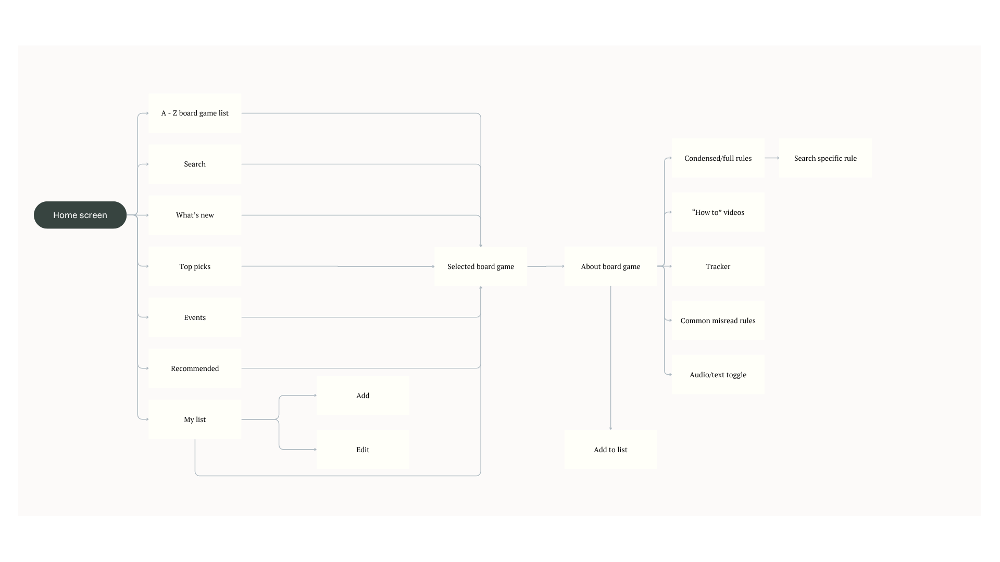
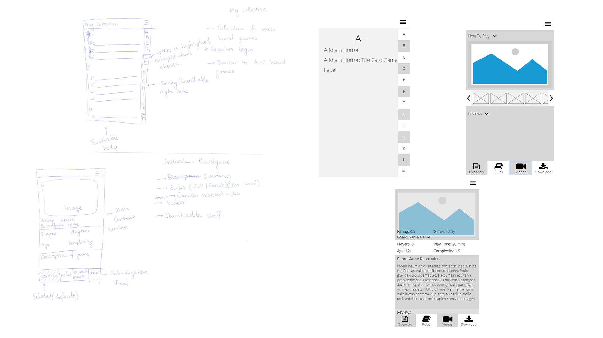

Overview: This self-initiated project allowed me to explore and strengthen my UX practice by addressing a common challenge: reducing user reluctance to engage with rulebooks and complex rule systems, often encountered in board games, tabletop games, and similar experiences.
I started by conducting a competitive analysis to examine existing solutions and identify gaps in how rule content is currently presented. To better understand user needs and build empathy, I created personas representing both novice and experienced players, highlighting their unique frustrations, goals, and behaviors related to learning new rules.
Through research, I formulated the statement of
Using journey maps, I visualized the typical user experience when engaging with rulebooks. This helped pinpoint where users encountered friction, confusion, and drop-off moments — allowing me to define the key problem areas that required design intervention.
To complement my initial findings, I conducted a survey using Typeform to collect quantitative data from a broader audience. This provided insights into user habits, preferred learning formats, and pain points when engaging with rulebooks, giving me data-driven direction for feature prioritization.
Drawing from research insights, I ideated potential solutions that would accommodate different learning styles and reduce cognitive load. Initial low-fidelity wireframes were created using hand drawn sketches and Axure, exploring different ways to structure, condense, and present rule information.
I conducted usability testing sessions with representative users to gather direct feedback on the prototype. Insights from testing led to several design refinements that improved clarity, usability, and overall engagement with the rule content.
The final prototype successfully demonstrated a multi-format rule delivery system that simplifies rule learning, accommodates various user learning styles, and transforms a traditionally frustrating experience into an intuitive and approachable one.